Diagram gallery
Editable DOT sources and generated SVGs, adapted from sameloop-dev-project. All diagram labels are in English. Future project names are red; architecture dashed links indicate work to qualify. Functional arrows describe relationships, not test results.
01 · A box, a thermometer and a fan
Functional view · no technical background required
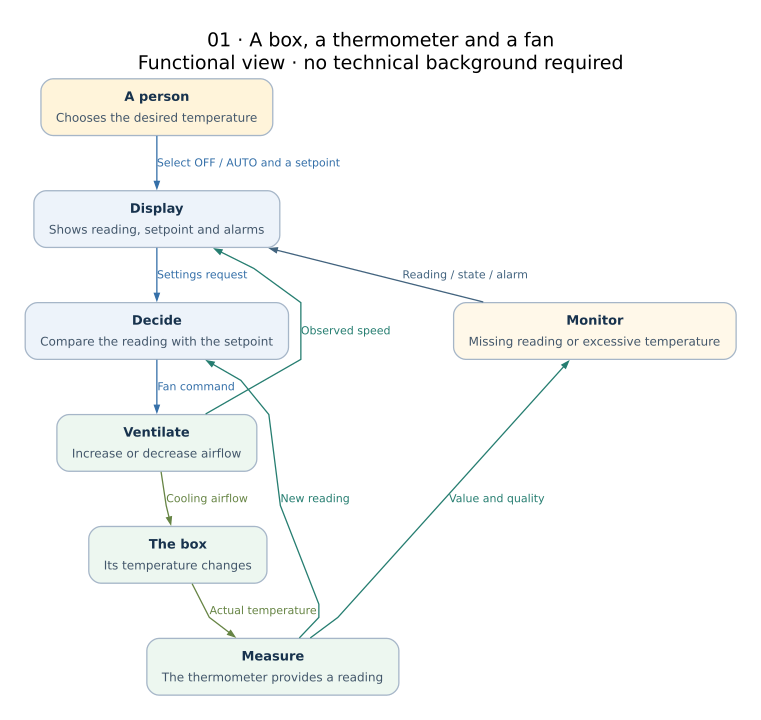
02 · Demo states
OFF/AUTO = user choice · availability and alarm are separate dimensions
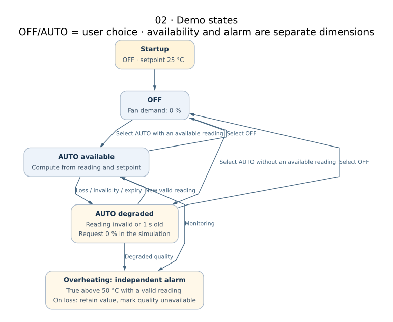
03 · Same function, different implementations
Target architecture · choose one stack · red names = future projects
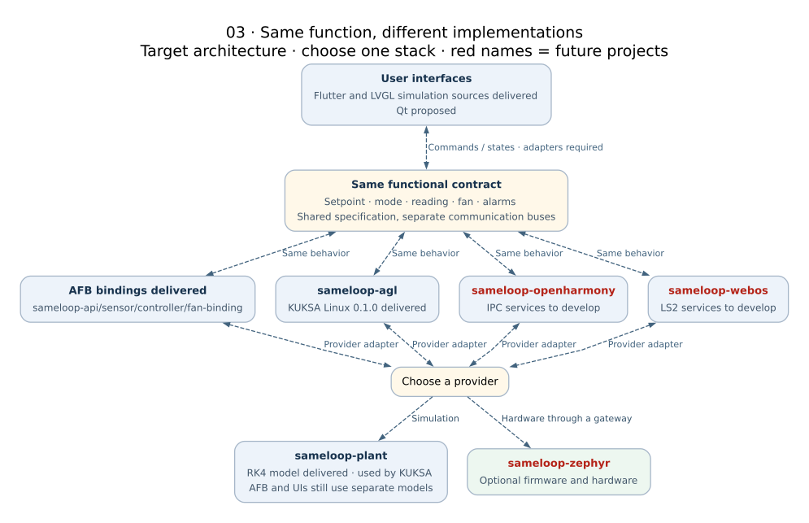
04 · redpesk / AFB: four bindings delivered
Solid = reported lab integration · dashed = future connection
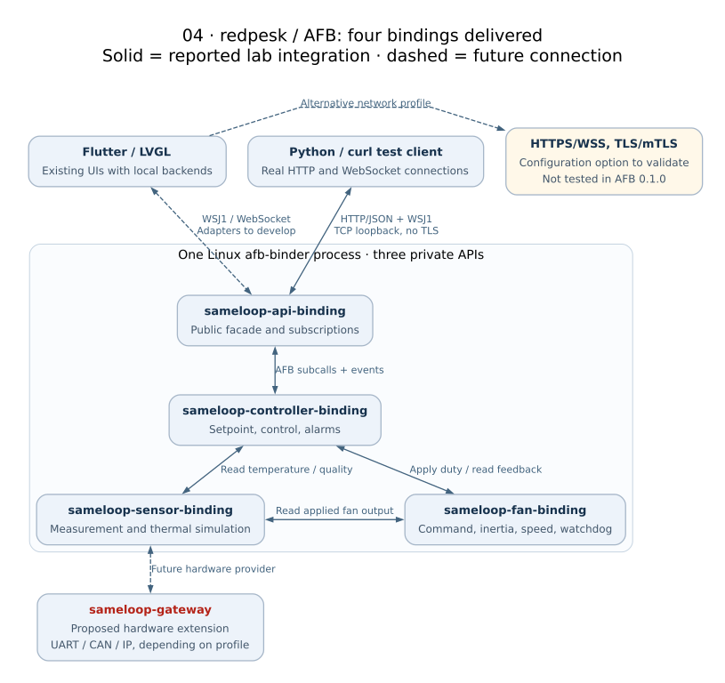
05 · KUKSA on Linux: profile 0.1.0 delivered
Imported evidence · not a complete AGL image
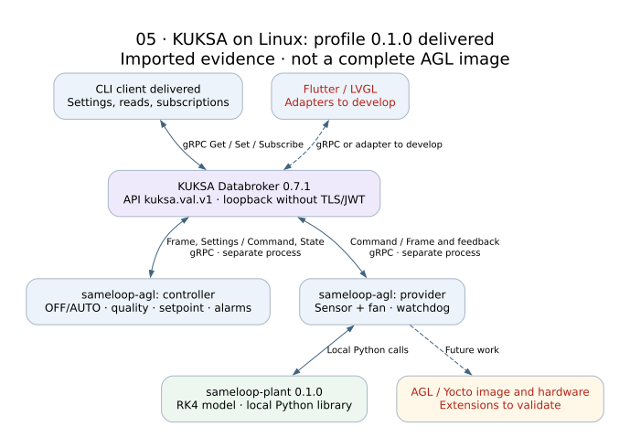
06 · OpenHarmony: IPC services and external UI
Proposed architecture · same device for the first prototype
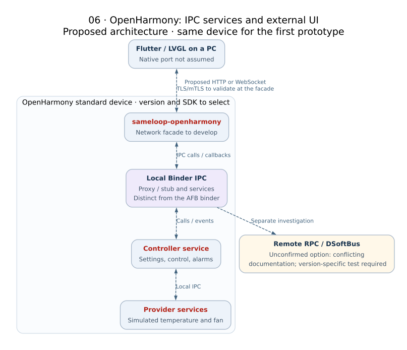
07 · webOS OSE: services on Luna Bus
Proposed architecture · OSE target; commercial TV support not assumed
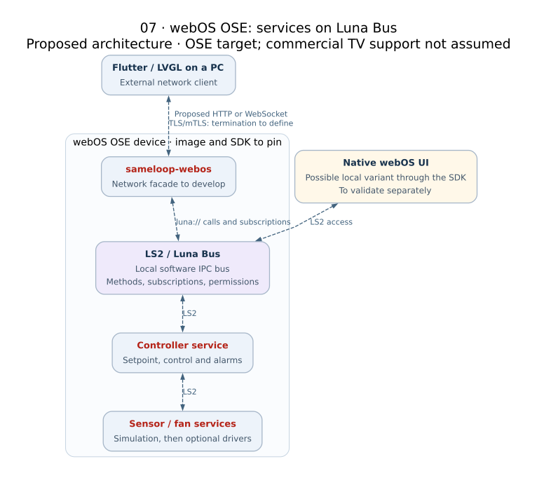
08 · Zephyr: software zbus and explicit external link
Shown variant: local MCU control · all connections remain to be developed
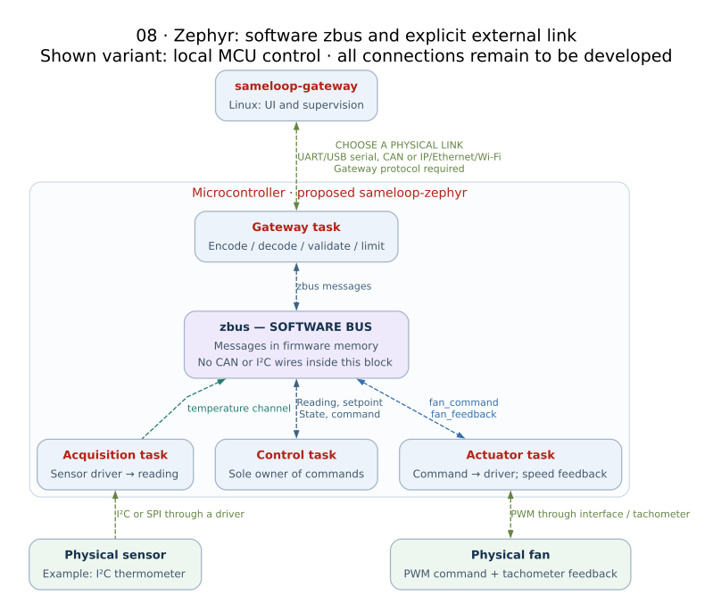
09 · From messages to wires: three alternative links
Conceptual diagram · pinout, transceivers, power and drivers require validation
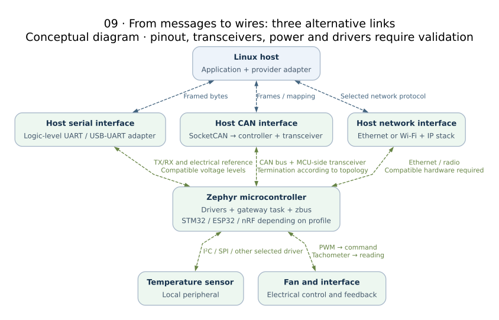
10 · Plaintext, server-authenticated TLS and mTLS
Security concepts · no SameLoop TLS profile tested yet
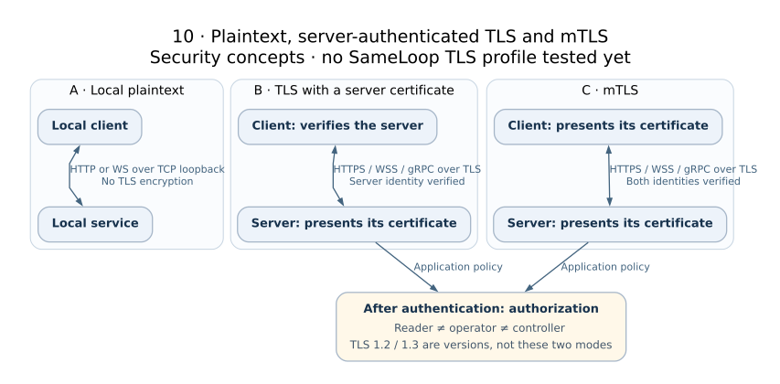
11 · CommonAPI / SOME/IP: comparison extension
Proposed architecture · optional stack beyond the MVP
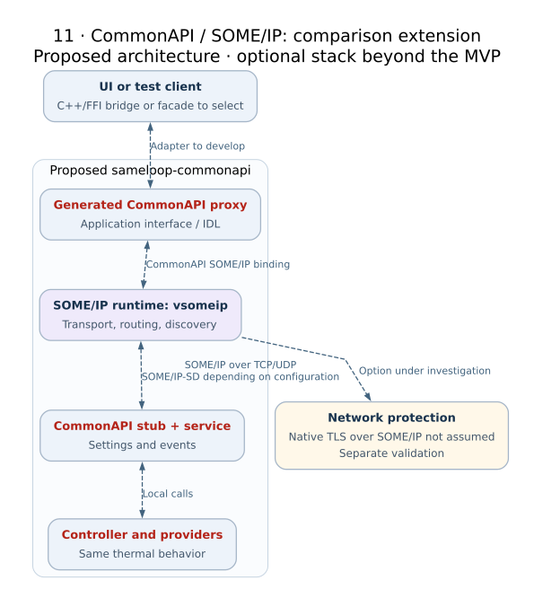
12 · Every test level has a scope
Passing unit tests does not validate the network, UI or hardware
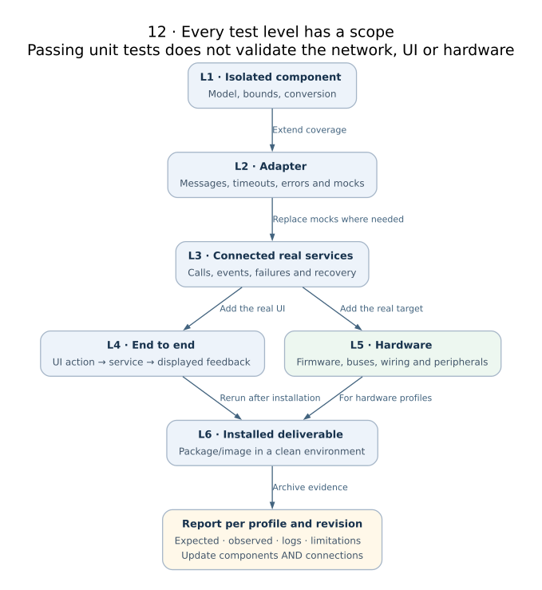
13 · From repositories to reproducible demos
Proposed workflow · build systems remain specific to each target
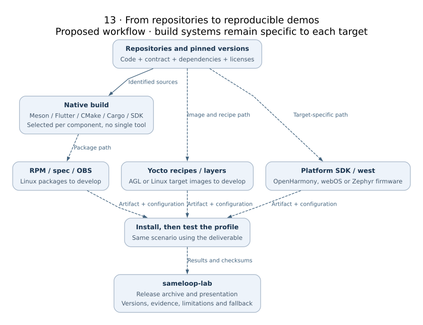
14 · Connect two stacks with a single controller
Proposed first step: AFB → KUKSA telemetry only
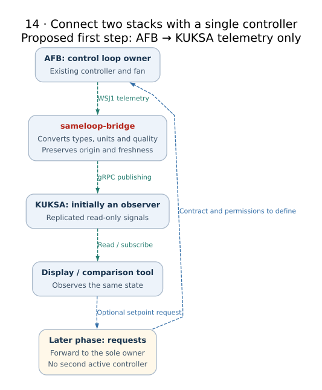